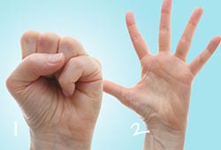

ေလ့က်င့္ခန္း ၁

၁။ ဒီ ေလ့က်င့္ခန္း က သင့္ လက္ ေခ်ာင္း ေလး ေတြ သန္ မာလာေအာင္၊ လက္ ရဲ႕ လႈပ္ ရွားမႈ ေတြ ပိုမို ျမန္ ဆန္ လာ ေအာင္၊ နာက်င္ မႈ ေတြ သက္ သာလာ ေအာင္ ကူညီပါလိမ့္ မယ္။
ေရွးဦးစြာ လက္ သီးဆုပ္ ပါ။
မိနစ္ ဝက္ သို႕ တစ္ မိနစ္ ေလာက္ ၾကာ ေသာ္ လက္ ဝါးျဖန္႔ ပါ။
အနည္း ဆံုး ၄-၅ ခါ ေလာက္ လက္ ႏွစ္ ဘက္ လံုး ျပဳ လုပ္ပါ။